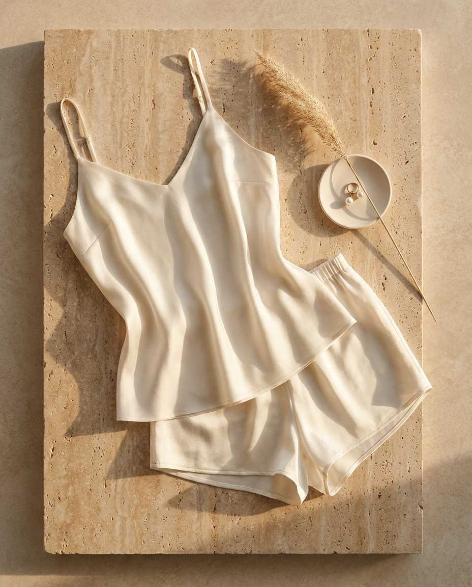

What's already working on Meta
Real ads pulled from the ad library today — not blog claims. (Web-sourced competitor AOV/funnel claims all failed adversarial verification, so the teardown below uses only live ad-platform data.)

25.4M total reach, GB/IE/EU. Pure discount machine: 48-hour flash sales, 50–70% off, tiered codes, "Buy 3 get 1."
Takeaway: value-anchoring against luxury brands works at scale. But the brand equity is disposable — that's our opening.

114M total reach, 1.28M IG followers, 7 EU markets. Positioning: quality, "machine-washable silk," awards, local warehouses + free returns.
Takeaway: washability is THE objection-killer in this category. Every Nancy Silk PDP and ad should handle it up front.

56M total reach on a single silk sleep-mask SKU. Plays: "As seen in Selfridges," 5,000+ five-star reviews, limited color drops.
Takeaway: a single hero SKU with social proof + scarcity drops can carry an entire ad account. Skin-benefit framing is standard.

1.3M reach on one silk-bedding image ad, running 6 months. Angle: silk keeps hair & skin "naturally hydrated."
Takeaway: beauty-benefit framing (hair/skin) is the evergreen soft-claim angle — it sells silk without price talk.

2.1M reach on the hero ad, 338 days running, ~$19K est. spend. Mechanism-angle silk boxers ("Built for balls. Backed by science").
Takeaway: advertorial-style mechanism copy works on silk — this is Nancy's home turf. (Their T-level claims are non-compliant; ours won't be.)

Nobody in the silk category owns intimacy. SilkSilky owns cheap. LilySilk owns washable. Lunya owns sleep (US). Sleeper owns party pajamas.
Nancy is the only brand that can say it with a straight face and an existing audience of buyers who already trust us with their intimate life.
The provocative-luxury proof set
Three reference brands from Ali. All three run direct product ads on Meta today — proof the bolder lane clears policy when the craft is high. Pulled live from the ad library:

Leather/latex intimacy brand now expanding into textiles — their new collection is literally called "After Hours."
Takeaway: our After Dark lane is being validated in real time by an adjacent brand moving INTO fabric. Nancy moves with silk + an owned audience they don't have.

Designer leather/lingerie house running 3.87M reach in 30 days — through a persona page called "Marie's Whisper Magazine." Crotchless-bodysuit product ads, in-feed, at scale.
Takeaway: the magazine-persona page is exactly Nancy's playbook. A "Nancy After Dark" editorial page can carry spicier creative than the main brand page ever could.

The category ceiling. Runs single-product luxury ads (€110/£95 thongs) with three-word desire copy and SS26 campaign art.
Takeaway: at the top end, the product shot IS the ad — no discounts, no bullet points. Sets the photography bar for the 22mm gift tier.